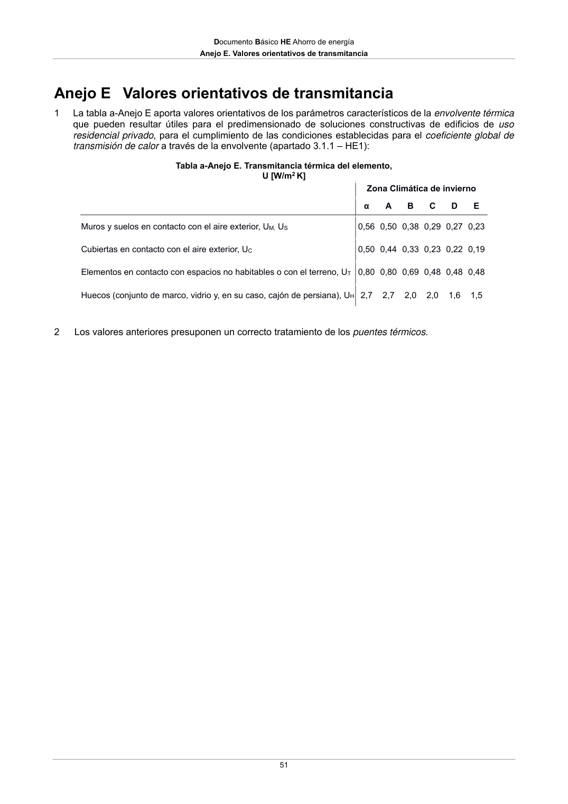

DB-HE · Anejo E. Valores orientativos de transmitancia · 2 Los valores anteriores presuponen un correcto tratamiento de los puentes térmicos. · versión 2022-06-14
SHA256: 7f890bd495552e979f83f72c5f5c7b642e745911a8e343a7b5b73023ce0e1f05 · página física 51 de 56 · métodos de encabezado
solo si están cotejados.
Formatos: Markdown · JSON de bloques · PDF p. 51 · imagen PNG
Documento Básico HE Ahorro de energía Anejo E. Valores orientativos de transmitancia 51 Anejo E Valores orientativos de transmitancia 1 La tabla a-Anejo E aporta valores orientativos de los parámetros característicos de la envolvente térmica que pueden resultar útiles para el predimensionado de soluciones constructivas de edificios de uso residencial privado, para el cumplimiento de las condiciones establecidas para el coeficiente global de transmisión de calor a través de la envolvente (apartado 3.1.1 – HE1): Tabla a-Anejo E. Transmitancia térmica del elemento, U [W/m2 K] Zona Climática de invierno α A B C D E Muros y suelos en contacto con el aire exterior, UM, US 0,56 0,50 0,38 0,29 0,27 0,23 Cubiertas en contacto con el aire exterior, UC 0,50 0,44 0,33 0,23 0,22 0,19 Elementos en contacto con espacios no habitables o con el terreno, UT 0,80 0,80 0,69 0,48 0,48 0,48 Huecos (conjunto de marco, vidrio y, en su caso, cajón de persiana), UH 2,7 2,7 2,0 2,0 1,6 1,5 2 Los valores anteriores presuponen un correcto tratamiento de los puentes térmicos.
